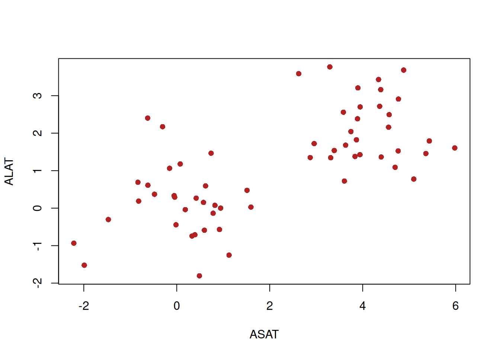
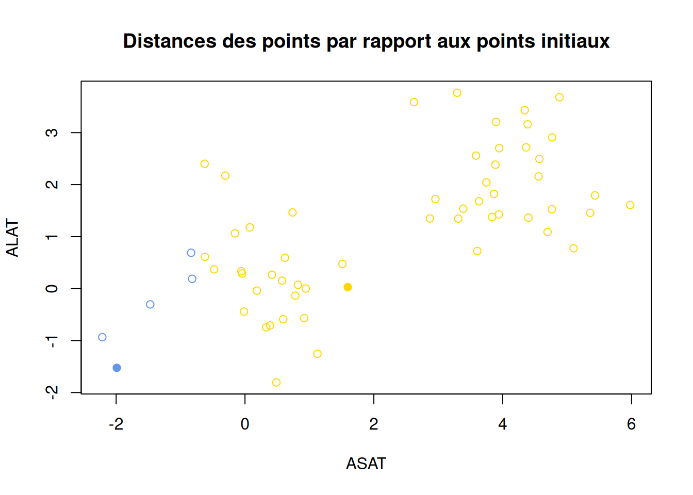
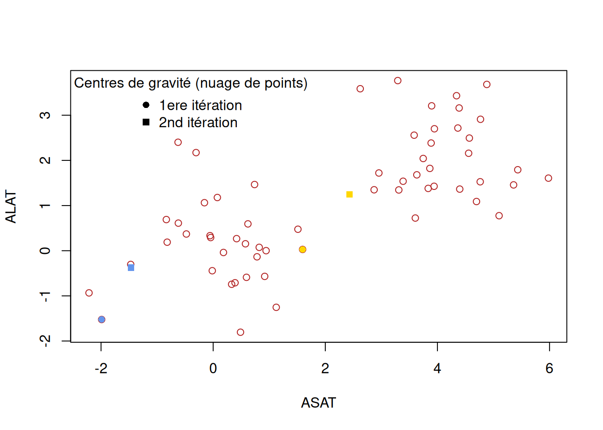
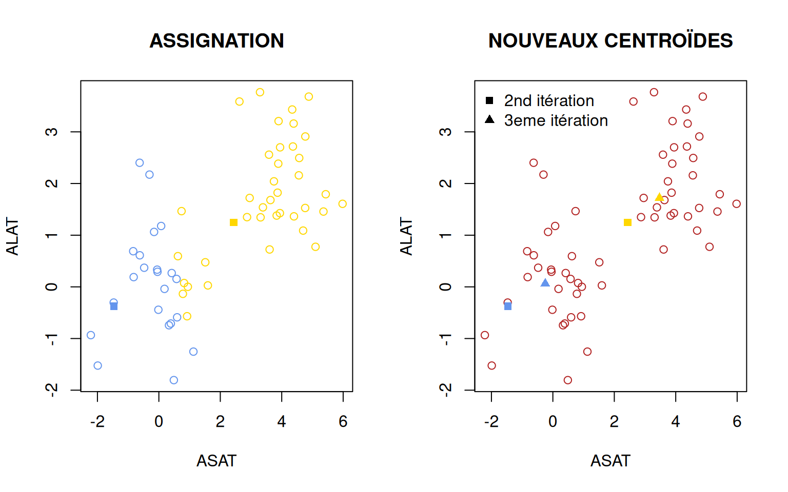
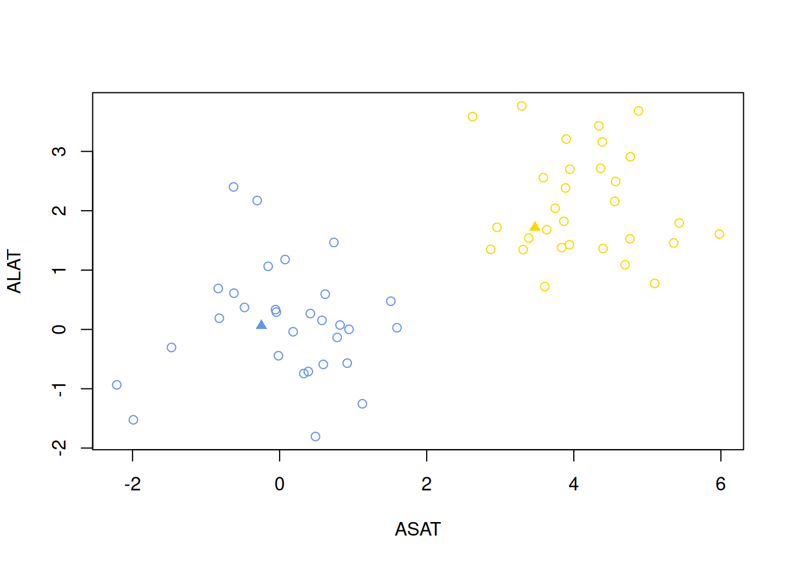
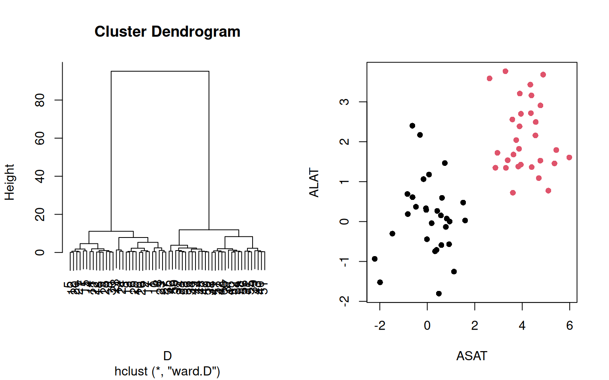
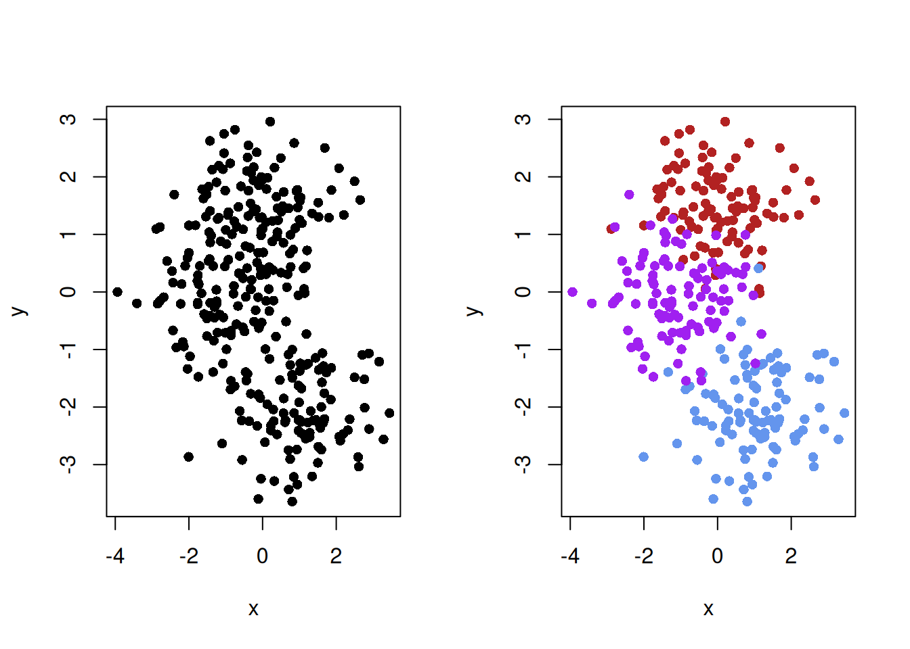
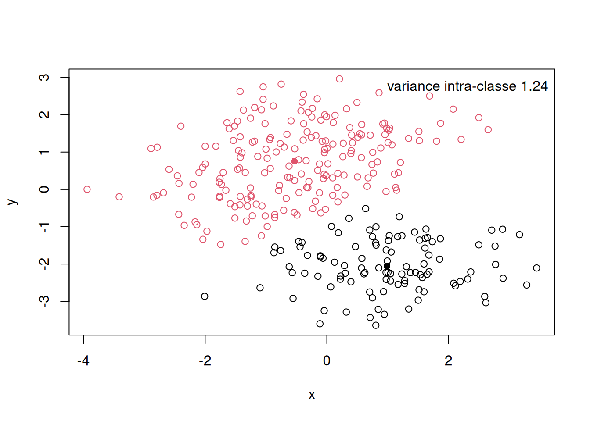
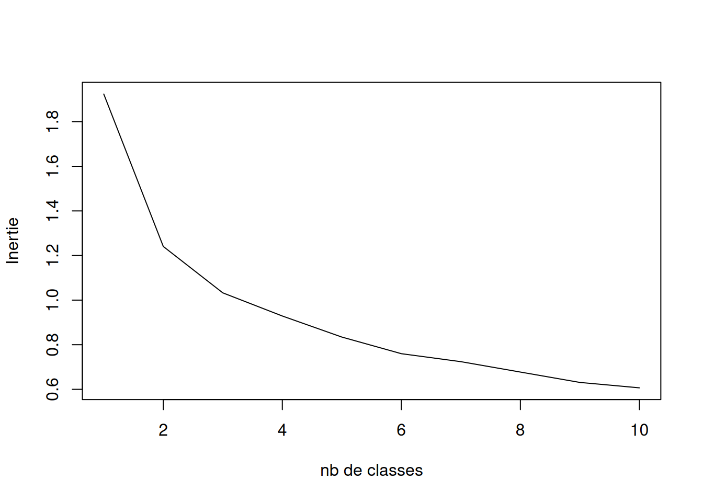
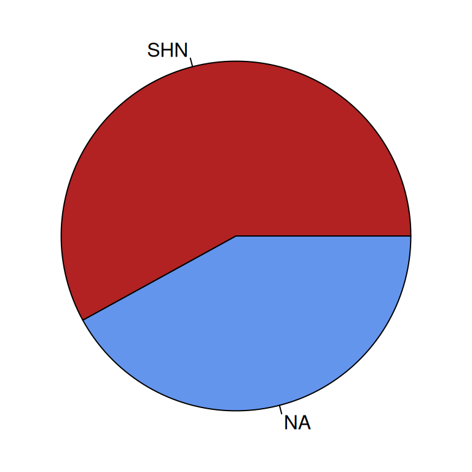

Statistiques appliquées aux sciences du vivant et de l’environnement
2026-10-14
Chapitre 1 Clustering
Dans les deux prochains chapitres, l’objectif est de découvrir deux outils méthodologiques qui s’incrivent dans une démarche d’exploration non-supervisée des données. Autrement dit, par l’utilisation de ces deux outils, nous souhaitons répondre à la question : Quelles sont les informations cachées au sein des données que l’on étudie ?
Dans le cadre du clustering, la question précise devient : Les individus se répartissent-ils en groupes homogènes et bien différenciés ? L’objectif de ce chapitre est donc de comprendre les outils qui permettent de trouver des patterns d’individus via l’expression de leurs variables.
Ici, nous avons simulé 30 individus avec une moyenne de 0 pour la variable ASAT et la variable ALAT, alors qu’un autre groupe de 30 individus possède une moyenne de 4 au ASAT et de 2 au ALAT. Pour rappel, une augmentation de ces deux transaminases au niveau du compartiment sanguin reflète des lésions hépatiques.
- Que peut-on dire du graphique ci dessous ?
set.seed(1)
X <- data.frame(ASAT = c(rnorm(30, mean=0, sd=1), rnorm(30, 4, 1)),
ALAT = c(rnorm(30, mean=0, sd=1), rnorm(30, 2, 1)))
plot(X, xlab="ASAT", ylab="ALAT", pch=16, col="firebrick")
- Que pouvons-nous remarquer ? Comment synthétiser l’information de notre population ?
1.1 Généralités
Définition des termes :
Classification : Regrouper des individus en groupes ou classes d’individus proches.
Non supervisée : dont on ne connait pas la réalité, on n’a pas d’information à priori.
Autrement dit, la classification non supervisée (ou clustering) est la recherche d’une partition ou d’une répartition des individus en classes homogènes, de sorte à ce qu’elles soient les plus distinctes possibles.
Dans ce contexte, nous souhaitons estimer :
L’appartenance à une classe pour chaque individu.
Le nombre de classes optimal.
Dans ce chapitre, nous verrons 2 algorithmes qui permettent de définir la classe des individus : la classification k-means et la Classification Hiérarchique Ascendante (HAC en anglais).
1.2 K-means (ou algorithme des centres mobiles en français)
1.2.1 Principe
La finalité de l’algorithme est de nous donner l’appartenance des individus à \(G\) groupes. \(G\) est le nombre de groupe que l’on pourrait attendre.
Dans un cas, nous devons faire l’hypothèse que la population peut se classer selon \(G\) patterns mais dans d’autres cas, nous ne savons quelle nombre de groupes choisir.
L’algorithme doit rendre (outputs) \(G\) centres de gravité (coordonnée \(x,y,...,z\) du centre d’un groupe).
Enfin, pour chaque individu, on associe le centre le plus proche, ce qui détermine l’appartenance de chaque individu à un groupe et donc, in fine, les groupes.
1.2.2 Algorithme du k-means (appartenance à une classe pour chaque individu)
L’algorithme du k-means se base sur plusieurs étapes : Vous pouvez retrouver une visualisation de comment l’algorithme fonctionne à la fin de la page html suivante.
- Première étape (INITIALISATION): on prend au hazard un nombre de points égal au nombre de groupes que nous cherchons (ici \(G = 2\)). Nous allons prendre les points 24 et 4 (représentés en bleu et jaune sur le graphique).
plot(X, xlab="ASAT", ylab="ALAT", pch=16, col="firebrick")
points(x=X[24,1], y=X[24,2], xlab="ASAT", ylab="ALAT", pch=16, col="cornflowerblue")
points(x=X[4,1], y=X[4,2], xlab="ASAT", ylab="ALAT", pch=16, col="gold")- Seconde étape (ASSIGNATION) : chaque point sera associé à l’un des points initiaux (bleu ou jaune) en fonction de leur distance par rapport à ce dernier.
Pour rappel, ici nous utiliserons la distance euclidienne dont la formule pour deux variable \(X\) et \(Y\) est \(d(M_1, M_2) = \sum{\sqrt{(X_1-X_2)^2+(Y_1-Y_2)^2}}\) où \(M_i\) correspond aux individus.
## ASSIGNATION
d_n_blue <- as.matrix(dist(rbind(X[24,],X)))[-1,1] # Distance de l'ensemble des points au point bleu.
d_n_gold <- as.matrix(dist(rbind(X[4,],X)))[-1,1] # Distance de l'ensemble des points au point jaune.
cluster <- apply(cbind(d_n_blue, d_n_gold),1,which.min) # phase d'assignation.
cluster_col <- as.character(factor(cluster, c(1,2), c("cornflowerblue", "gold")))
plot(X, xlab = "ASAT", ylab = "ALAT", pch = 1, col = cluster_col, main = "Distances des points par rapport aux points initiaux")
points(x=X[24,1], y=X[24,2], xlab="ASAT", ylab="ALAT", pch=16, col="cornflowerblue")
points(x=X[4,1], y=X[4,2], xlab="ASAT", ylab="ALAT", pch=16, col="gold")
Dans ce graphique, les points pleins sont les individus sélectionnés lors de l’étape d’INITIALISATION, alors que les points vides sont les autres individus du jeu de données.
La couleur des points vides est déterminée en fonction de leur distance aux points pleins. Si l’individu se retrouve plus proche du point bleu alors il sera assigné au groupe bleu, et inversement pour les points plus proches du point jaune.
- Troisième étape (NOUVEAUX CENTROÏDES) : Dans cette troisième étape il faut recalculer le centroïde de chaque groupe (bleu et jaune), c’est-à-dire les centres de gravité du nuage de points bleus et du nuage de points jaunes.
Ce seront nos nouveaux points de départ pour recommencer la phase d’ASSIGNATION.
## NOUVEAUX CENTROÏDES
centroide_blue <- colMeans(X[which(cluster==1),])
centroide_jaune <- colMeans(X[which(cluster==2),])
plot(X, xlab="ASAT", ylab="ALAT", pch=1, col="firebrick")
points(x=X[24,1], y=X[24,2], xlab="ASAT", ylab="ALAT", pch=16, col="cornflowerblue")
points(x=X[4,1], y=X[4,2], xlab="ASAT", ylab="ALAT", pch=16, col="gold")
points(centroide_blue[1], centroide_blue[2], xlab="ASAT", ylab="ALAT", pch=15, col="cornflowerblue")
points(centroide_jaune[1], centroide_jaune[2], xlab="ASAT", ylab="ALAT", pch=15, col="gold")
legend("topleft", c("1ere itération", "2nd itération"), bty="n", pch= c(16, 15), title = "Centres de gravité (nuage de points)")
Noter que les nouveaux centres de gravité ne sont plus associés à des individus en particulier.
- Boucler (itérer) les deux dernières étapes (ASSIGNATION + NOUVEAUX CENTROÏDES) pour converger vers des groupes homogènes.
d_n_blue <- as.matrix(dist(rbind(centroide_blue,X)))[-1,1] # Distance de l'ensemble des points au carré bleu.
d_n_gold <- as.matrix(dist(rbind(centroide_jaune,X)))[-1,1] # Distance de l'ensemble des points au carré jaune.
cluster <- apply(cbind(d_n_blue, d_n_gold),1,which.min) # phase d'assignation.
cluster_col <- as.character(factor(cluster, c(1,2), c("cornflowerblue", "gold")))
layout(matrix(c(1,2), nrow=1))
plot(X, xlab="ASAT", ylab="ALAT", pch=1, col=cluster_col, main = "ASSIGNATION")
points(centroide_blue[1], centroide_blue[2], xlab="ASAT", ylab="ALAT", pch=15, col="cornflowerblue")
points(centroide_jaune[1], centroide_jaune[2], xlab="ASAT", ylab="ALAT", pch=15, col="gold")
## NOUVEAUX CENTROÏDES
centroide_blue_2 <- colMeans(X[which(cluster==1),])
centroide_jaune_2 <- colMeans(X[which(cluster==2),])
plot(X, xlab="ASAT", ylab="ALAT", pch=1, col="firebrick", main = "NOUVEAUX CENTROÏDES")
points(centroide_blue[1], centroide_blue[2],pch=15, col="cornflowerblue")
points(centroide_jaune[1], centroide_jaune[2], pch=15, col="gold")
points(centroide_blue_2[1], centroide_blue_2[2],pch=17, col="cornflowerblue")
points(centroide_jaune_2[1], centroide_jaune_2[2], pch=17, col="gold")
legend("topleft", c("2nd itération", "3eme itération"), bty="n", pch= c(15,17))
À la fin, il faut faire une dernière étape d’ASSIGNATION pour définir la classe des individus où les triangles sont les centroïdes respectifs des deux groupes.
## ASSIGNATION FINALE
d_n_blue <- as.matrix(dist(rbind(centroide_blue_2,X)))[-1,1] # Distance de l'ensemble des points au point bleu.
d_n_gold <- as.matrix(dist(rbind(centroide_jaune_2,X)))[-1,1] # Distance de l'ensemble des points au point jaune.
cluster <- apply(cbind(d_n_blue, d_n_gold),1,which.min) # phase d'assignation.
cluster_col <- as.character(factor(cluster, c(1,2), c("cornflowerblue", "gold")))
plot(X, xlab="ASAT", ylab="ALAT", pch=1, col=cluster_col)
points(centroide_blue_2[1], centroide_blue_2[2],pch=17, col="cornflowerblue")
points(centroide_jaune_2[1], centroide_jaune_2[2], pch=17, col="gold")
On peut remarquer que l’algorithme converge bien vers les 2 groupes que l’on aurait pu imaginer en regardant le graphique au départ.
On peut aussi utiliser l’algorithme k-means directement sur R, en appelant la function kmeans de la librairie stats.
res.kmeans <- kmeans(X, centers = 2, iter.max = 2, nstart = 1)
# Utiliser le fonction help pour savoir à quoi corresponde les arguments de la fonction.
res.kmeans## K-means clustering with 2 clusters of sizes 30, 30
##
## Cluster means:
## ASAT ALAT
## 1 4.13277458 2.113333
## 2 0.08245817 0.110278
##
## Clustering vector:
## [1] 2 2 2 2 2 2 2 2 2 2 2 2 2 2 2 2 2 2 2 2 2 2 2 2 2 2 2 2 2 2 1 1 1 1 1 1 1 1
## [39] 1 1 1 1 1 1 1 1 1 1 1 1 1 1 1 1 1 1 1 1 1 1
##
## Within cluster sum of squares by cluster:
## [1] 40.91834 51.51169
## (between_SS / total_SS = 76.8 %)
##
## Available components:
##
## [1] "cluster" "centers" "totss" "withinss" "tot.withinss"
## [6] "betweenss" "size" "iter" "ifault"Dans l’objet res.kmeans, on retrouve :
- les coordonnées des centroïdes en fonction des variables.
## ASAT ALAT
## 1 4.13277458 2.113333
## 2 0.08245817 0.110278- la classe des individus.
## [1] 2 2 2 2 2 2 2 2 2 2 2 2 2 2 2 2 2 2 2 2 2 2 2 2 2 2 2 2 2 2 1 1 1 1 1 1 1 1
## [39] 1 1 1 1 1 1 1 1 1 1 1 1 1 1 1 1 1 1 1 1 1 1On retrouve bien les 30 premiers individus dans un groupe et les 30 derniers dans un autre groupe. C’est exactement de cette manière que nous avons simulé nos données. L’algorithme est donc performant pour retrouver les patterns des individus.
1.3 Classification Hiérarchique Ascendante
La classification hiérarchique ascendante est basée sur un algorithme glouton : au départ chaque individu forme une classe à lui seul, puis à chaque étape, les deux classes les plus proches sont agglomérées (critère local), pour finir avec une classe unique qui regroupe tous les individus.
L’arbre obtenu est coupé a posteriori de façon à obtenir un bon compromis entre le nombre de classes et la variance intra-classe (critère global).
Cet algorithme se base sur :
une distance entre les individus et,
sur une méthode d’agglomération.
1.3.1 Mesure de distance ou dissimilarité
Une mesure de dissimilarités est un peu différente de la mesure de distance que nous venons de voir. La mesure de dissimilarité mesure à quel point les individus se ressemble ou bien s’éloigne en fonction des variables.
Il existe plusieurs mesures de dissimilarités : Grover, Bray-Curtis, Jaccard, etc.
1.3.2 Mesure d’agrégation
Il en existe plusieurs, comme le saut minimum, la distance maximum, la moyenne ou encore la méthode de Ward.
Chaque méthode génère un résultat différent. Nous n’aborderons pas ici les détails de ces techniques, mais la méthode de Ward est souvent privilégiée. Cette méthode vise à minimiser l’inertie à l’intérieur des classes et à maximiser celle entre les classes pour obtenir des groupes aussi homogènes que possible.
La fonction principale pour calculer un dendrogramme est hclust, où l’on spécifie le critère d’agrégation avec l’option method. Dans notre cas, nous choisirons la méthode de Ward appliquée au carré des distances, en spécifiant method = "ward.D2".
D <- dist(X) # Distance entre les individus.
HAC <- hclust(D, method = "ward.D") # Méthode d'agglomération.
layout(matrix(c(1,2), nrow=1))
plot(HAC)
groupe <- cutree(HAC, 2) # Assigner les groupes
plot(X, xlab="ASAT", ylab="ALAT", pch=16, col=groupe)
L’arbre est construit du bas vers le haut. On remarque bien que 2 groupes se distinguent.
1.4 Définir le nombre de classes optimal ?
Dans certains cas, vous ne serez pas quel nombre de classes choisir. Nous allons définir deux approches possibles vous permettant de prendre une décision pour définir \(G\) (nombre de classes).
Dans cet exemple, j’ai simulé 300 individus en prenant le soin de simuler un jeu de données où les variables permettent de définir un nombre de trois groupes.
L’objectif de cette partie est de vérifier quel algorithme est le plus performant pour retrouver le nombre de groupe réel.
Je coloris les groupes que nous devons normalement retrouver.
layout(matrix(c(1,2), nrow=1))
plot(X[,c(1,2)], xlab ="x", ylab="y", pch=16)
plot(X[,c(1,2)], xlab ="x", ylab="y", col = rep(c("firebrick", "cornflowerblue", "purple"), each=100), pch=16)
Le problème que nous présentons ici est plus complexe que celui présenté en début de chapitre.
1.4.1 Première approche : Variance totale et règle du coude
Cette première approche est une approche empirique basée sur votre observation. Par exemple, on fait le kmeans pour différents nombres de classes et on choisit le meilleur compromis entre la variance intra-classe et le nombre de classes.
On appelle inertie d’un nuage de points la moyenne des carrés des distances des \(n\) points au centre de gravité d’une classe, soit :
\[ I_G (N) = \frac{1}{n} \sum{d(G, x_i)^2}\] Par exemple pour 2 classes, la variance intra-classe se calcule de cette manière :
var_intra = NULL
K = 2
res.class <- kmeans(X, centers = K)
plot(X, col=res.class$cluster, xlab="x",ylab="y" )
points(res.class$centers,pch=16, col=1:10)
for(k in 1:K){
var_intra <- c(var_intra, mean(as.matrix(dist(rbind(res.class$centers[k,],
X[which(res.class$cluster==k),])))[-1,1]))
}
legend("topright",paste("variance intra-classe", round(mean(var_intra), 3)), bty="n")
Plus la variance intra-classe est faible et plus les groupes formés sont homogènes.
On calcule ensuite la variance intra-classe pour chaque nombre de clusters estimé (sur l’axe des y sur le graphique).
K = 10
variance_nc = NULL
for(k in 1:K){
res.class <- kmeans(X, centers = k)
var_intra = NULL
for(j in 1:k){
var_intra <- c(var_intra, mean(as.matrix(dist(rbind(res.class$centers[j,],
X[which(res.class$cluster==j),])))[-1,1]))
}
variance_nc <- c(variance_nc, mean(var_intra))
}
plot(1:10, variance_nc, type='l', xlab = "nb de classes", ylab="Inertie")
- Quelle serait le nombre de classes adapté pour notre population ?
Attention, votre résultat dépend de l’initialisation des centroïdes : comme on les place aléatoirement, le résultat donné peut être différent quand on relance l’algorithme. Il est donc conseillé de relancer plusieurs fois l’algorithme pour sélectionner la partition dont l’inertie intra-classe sera la plus petite.
layout(matrix(c(1,2, 3), nrow=1))
plot(X[,c(1,2)], xlab ="x", ylab="y", pch=16, main="Population totale")
plot(X[,c(1,2)], xlab ="x", ylab="y", col = rep(c("firebrick", "cornflowerblue", "purple"), each=100), pch=16, main="Groupes reels")
plot(X[,c(1,2)], xlab ="x", ylab="y", col = kmeans(X, centers = 3)$cluster, pch=16, main="Groupes estimés par le kmeans")
- Refaire la même chose avec la seconde méthode (i.e., HAC) vue dans ce chapitre ? Quelle est la meilleure méthode pour ces données simulées ?
1.4.2 Seconde approche : coefficient de Silhouette (ou calcul des plus proches voisins).
Le coefficient de silhouette évalue la compacticité et la séparation des clusters (groupes).
l permet notamment de déterminer le nombre optimal de clusters pour un algorithme de partitionnement.Pour chaque point \(i\), la silhouette compare la distance moyenne aux points de son propre groupe (cohésion) à la distance moyenne aux points du groupe voisin le plus proche (séparation) :
Valeur positive : le point est plus proche de son propre groupe que des groupes voisins, ce qui indique un bon classement.
Valeur négative : le point est plus proche d’un groupe voisin que du sien, ce qui signale un mauvais classement.
Le coefficient de silhouette global correspond à la moyenne des coefficients de l’ensemble des points. Il varie entre \(-1\) et \(1\) : plus sa valeur est proche de \(1\), meilleure est la segmentation.Formulation mathématiqueSoit \(C(i) = g\) le groupe auquel appartient le point \(i\).
L’ensemble des points appartenant au groupe \(g\) est défini par :
\[I_{g} = \{i \in [\![1, N]\!] \mid C(i) = g\}\]
Le coefficient (ou score) de silhouette se calcule d’abord pour un point individuel \(i\). Il repose sur deux distances :
- La distance moyenne intra-groupe (cohésion) :
\[a(i) = \frac{1}{\vert{}I_{g}\vert{} - 1} \sum_{j \in I_{g},\, j \neq i} d(x^i, x^j)\] > Plus \(a(i)\) est petit et meilleur est la cohésion.
- La distance moyenne minimale inter-groupes (séparation) :
\[b(i) = \min_{g' \neq g} \frac{1}{\vert{}I_{g'}\vert{}} \sum_{i' \in I_{g'}} d(x^i, x^{i'})\]
Plus \(b(i)\) est grand et meilleur est la séparation.
Le coefficient de silhouette du point \(i\) s’écrit alors :
\[s_{\text{sil}}(i) = \frac{b(i) - a(i)}{\max(a(i), b(i))}\]
Donc plus \(b(i) - a(i)\) est positif et meilleur est la cohésion intra-groupe et la séparation inter-groupe.
1.5 Travaux dirigés
Durée : 1h30
1) Calculer la distance entre les 4 différents individus. Quelles sont les étapes ?
a. Normalisation. Centrer les données. Calcul de la variance puis écart type. Réduire les données.
b. Calculer la matrice de distances \(n \times n\) sur les données non normalisées
2) Comment grouperiez-vous les individus ?
3) Pourquoi l’algorithme du k-means s’intitule en français « algorithme au centre mobile » ?
4) Quelles sont les étapes de l’algorithme ?
5) Performance du kmeans. Comment quantifier la performance de classification non supervisée du kmeans ?
a. Visuellement.
b. Statistiquement. Calculer l’Accuracy (la vraisemblance du modèle (donc de classification)). Calculer l’erreur du modèle. Test statistique.
c. Avec des outliers. Stabilité des résultats ?
1.6 Travaux pratiques
Objectif : Création de son propre algorithme de clustering de type kmeans.
- Simuler les données.
sigma <- matrix(0, ncol=2,nrow=2)
diag(sigma) <- c(1,0.4)
X <- rbind(mvtnorm::rmvnorm(30, mean=c(0,1.5), sigma),
mvtnorm::rmvnorm(30, mean=c(1,-2), sigma),
mvtnorm::rmvnorm(30, mean=c(0,0), sigma))1.6.1 Création de votre propre algorithme kmeans (1h).
Vous devrez vous aider des lignes de codes écrites dans ce chapitre pour :
coder la phase d’INITIALISATION.
coder la phase d’ASSIGNEMENT.
calculer les nouveaux centres de gravités en fonction de la phase précédente.
concaténer les trois fonctions dans une seule et même function.
1.6.2 Efficacité et comparaison de l’algorithme (30 minutes).
Modifier les moyennes des données simulées pour voir comment réagit votre algorithme.
Est-il tout le temps efficace ?
Ajouter les individus excentrées
Refaire le clustering, qu’observez-vous ?
Tester l’algorithme HAC avec différentes distances ?
1.6.3 Clustering (1h30).
- Implémenter le jeu de données Morpho2.xlsx sur R que vous pouvez télécharger ICI.
Utiliser la library readxl et sa fonction read.excel().
Tester l’algorithme des kmeans sur les colonnes de 2:6.
Combien de groupes choisir ?
A quoi correspond la colonne 1 ? Manipuler l’information avec la fonction
substr()ou biengrep()pour différencier les hommes des femmes.Interpréter les groupes avec les variables sexe et IMC.
Refaire la même chose avec l’algorithme HAC.
Conclure.